Друк пасти + SPI
Трафаретний принтер та 3D-інспекція пасти до встановлення компонентів.
Виробництво
Оптоволокно, композити, полімерне лиття та електроніка на одній площадці в Підкарпатті. Від сировини до протоколу якості — всередині компанії.
01 · Оптоволоконні системи
Одномодове волокно без котушки і без шпулі: після перемотування звій стабілізується клеєм і вкладається в польовий корпус із PETG власного 3D-друку. Волокно сходить із внутрішнього шару без обертання — бортова частина легша за будь-яку котушку, а канал керування не видно в радіоефірі.
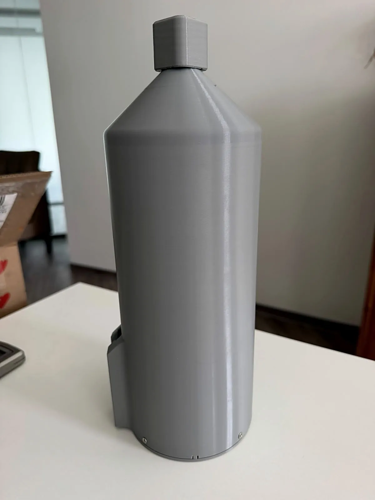
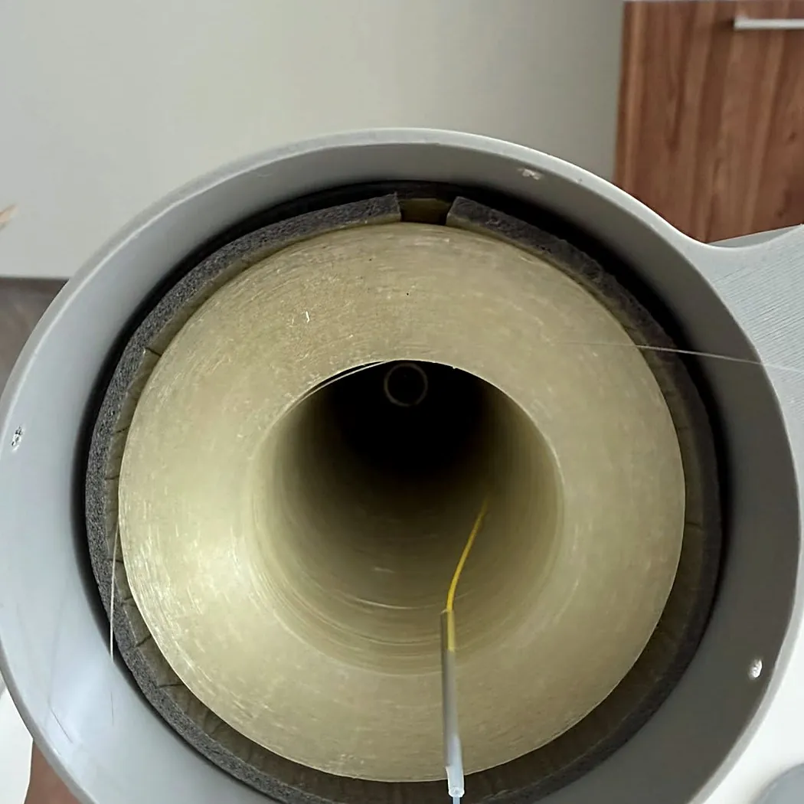
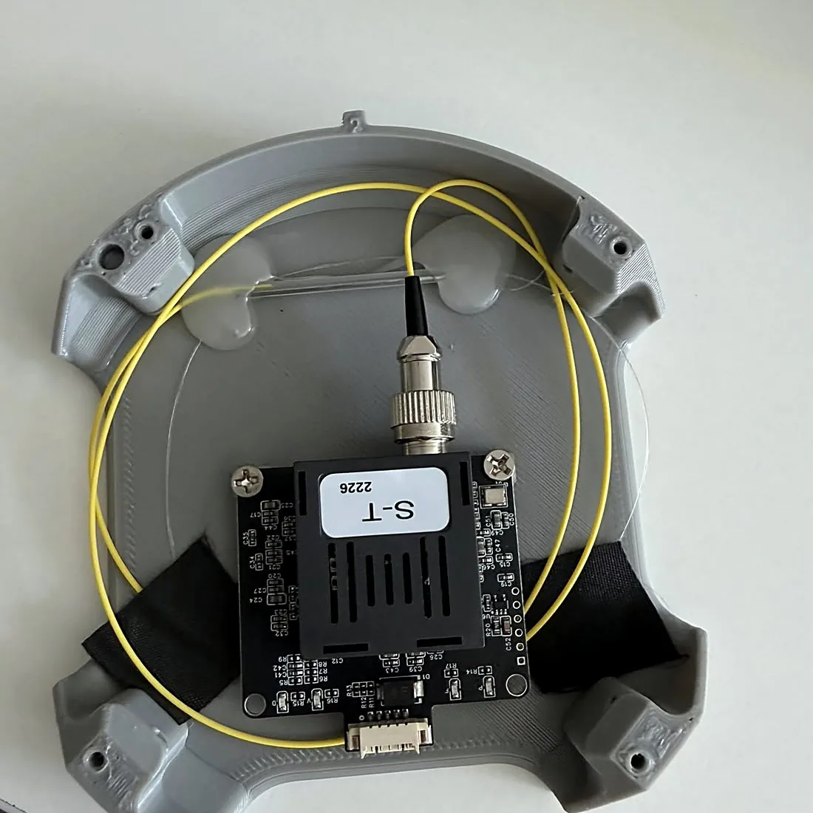
З транспортних барабанів на оправку з контролем натягу та лічильником довжини.
Просочення клеєм, сушіння — звій тримає форму без шпулі й не осипається.
3D-друк PETG, монтаж трансивера, портів і патчкордів, маркування.
OTDR, зважування, вимірювання габаритів. Протокол на кожен звій.
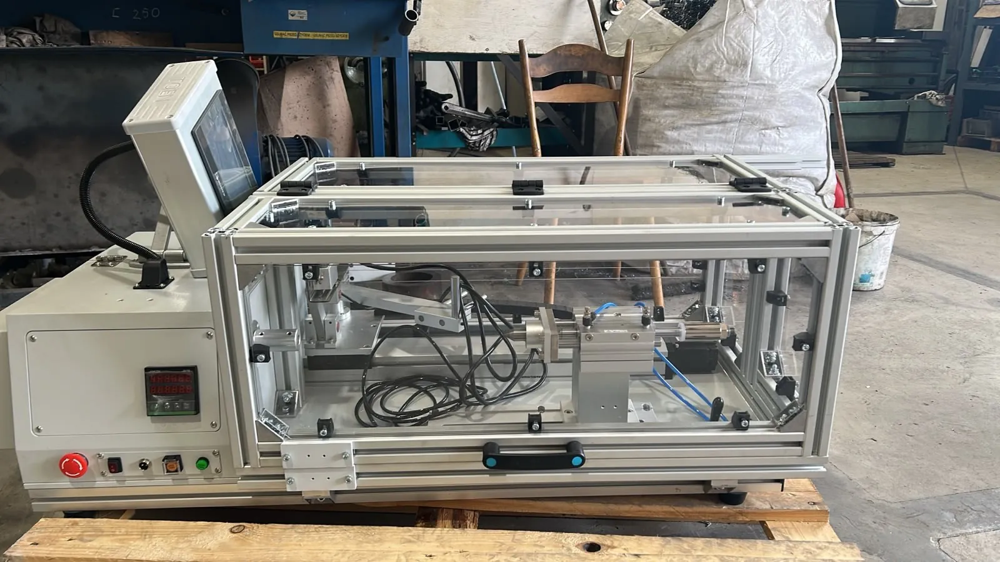
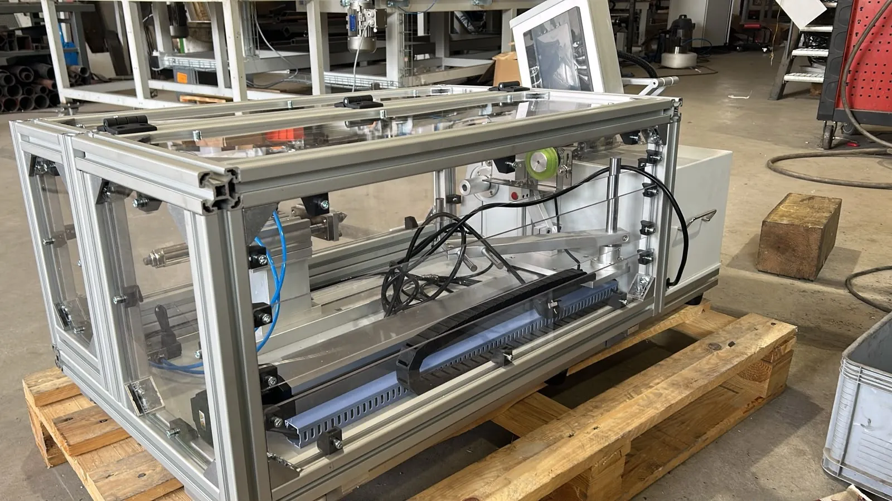
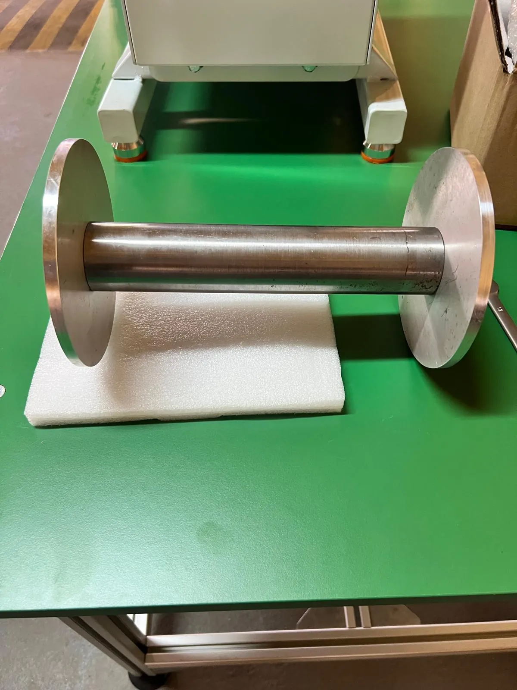
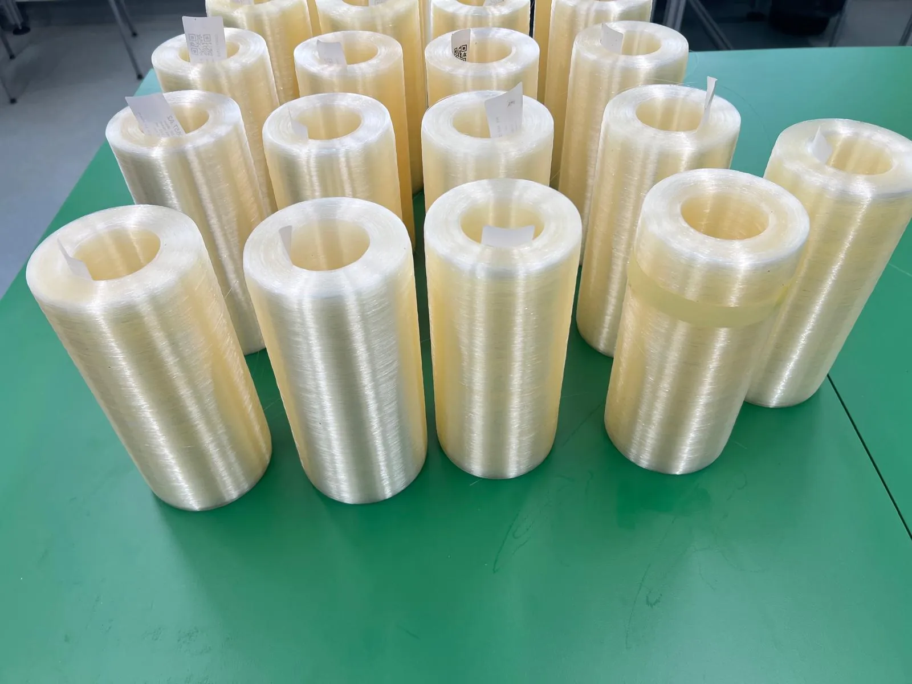
02 · Композитні матеріали
Лінія з 23 одиниць обладнання: розкрій тканини, намотування труб, обмотка стрічкою з ЧПУ, печі полімеризації, безцентрове шліфування та прес для плит 1400 × 1200 мм. Під власні рами БпЛА та на замовлення — за кресленням клієнта.
Лінія в стадії запуску · 2026
03 · Полімерне лиття під тиском
Два термопластавтомати Haitian MA3200 та MA3800 із 5-осьовими роботами знімання, сушарками гранул і термостатами форм. Перші вироби — пропелери 10″ та 15″ для важких FPV-платформ і корпуси звоїв оптоволокна.
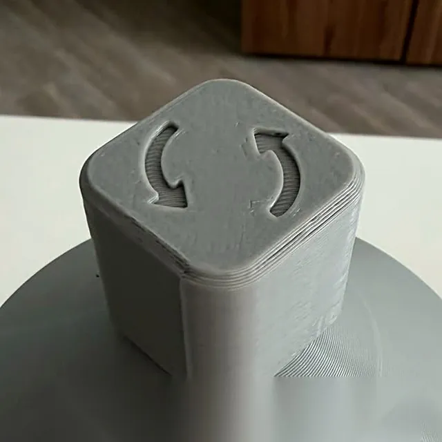
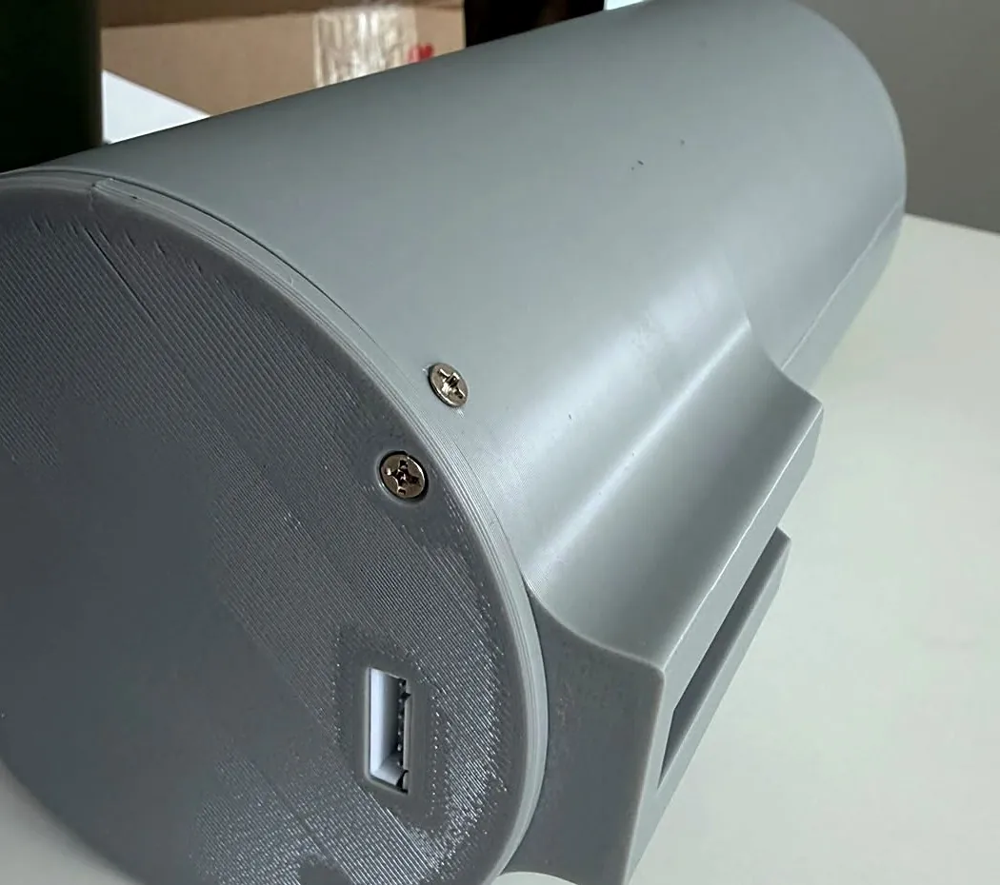
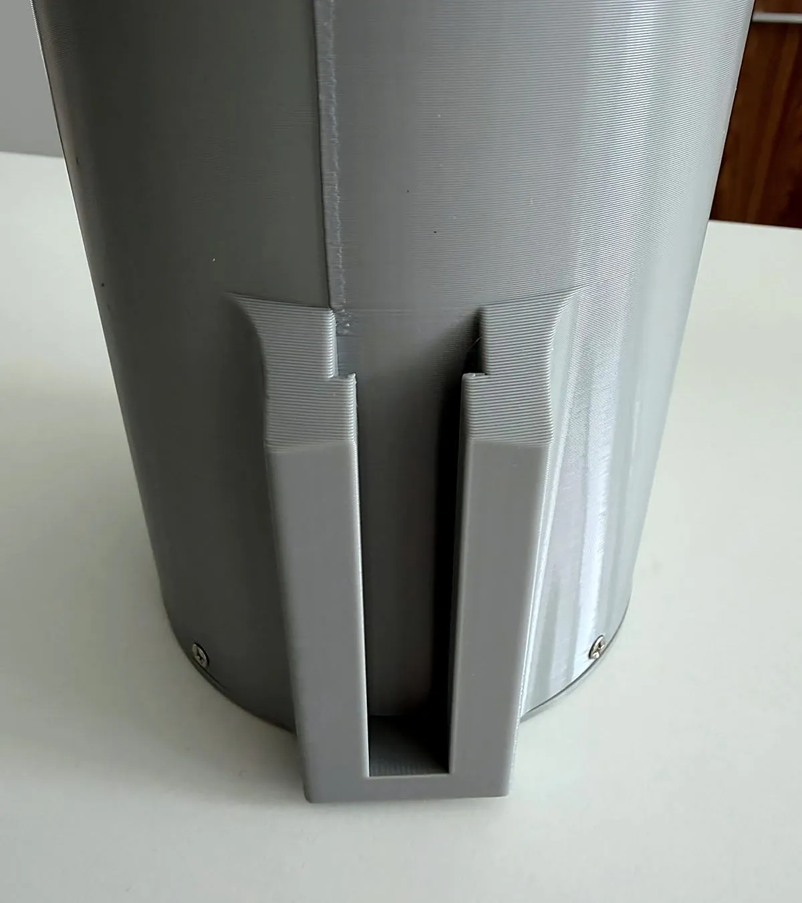
04 · Електроніка та SMT
Лінія поверхневого монтажу на площадці понад 2000 м² у Підкарпатті: трафаретний друк пасти, SPI, встановлення компонентів, конвекційна пайка, AOI та рентген-контроль.
Трафаретний принтер та 3D-інспекція пасти до встановлення компонентів.
Високошвидкісні та багатофункціональні установники для 0201 … QFP/BGA.
Багатозонна піч оплавлення з профілюванням під безсвинцеві сплави.
Автоматична оптична інспекція та рентген-контроль BGA і прихованих з’єднань.
05 · Контроль якості та документація
Вимірювання виконуються на виробництві та фіксуються у журналі якості. Замовник отримує комплект документів, який проходить митницю і технічне приймання без додаткових запитів.
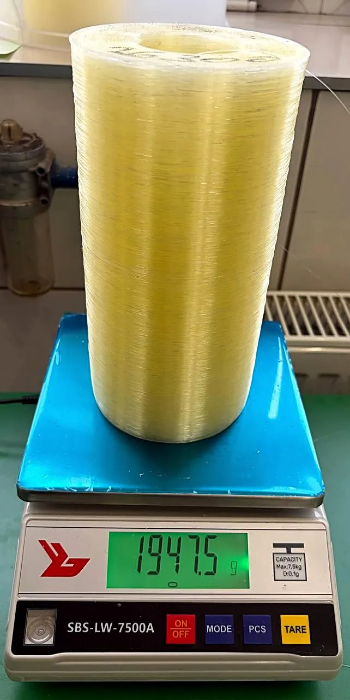
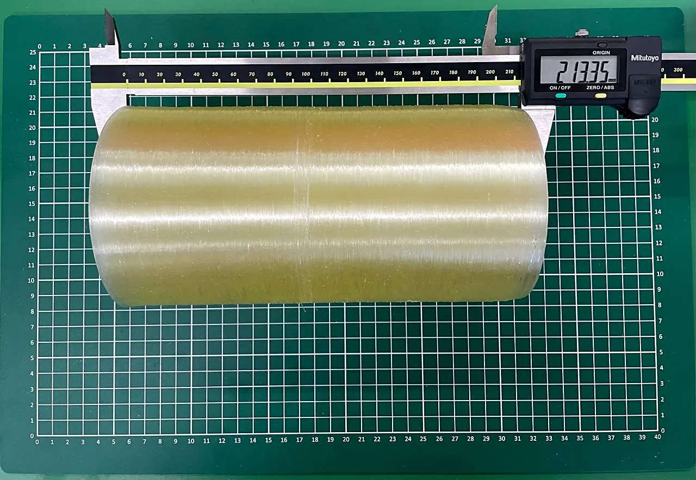
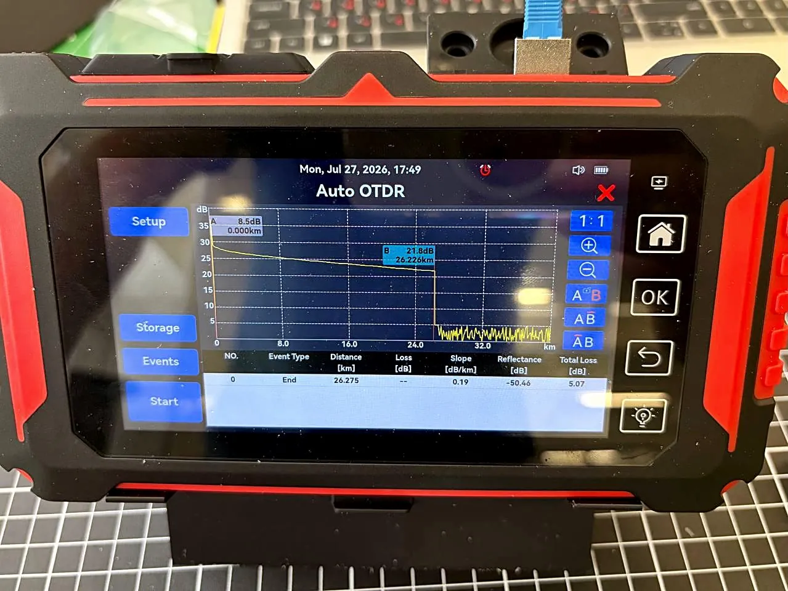
Запит
Довжина звою, геометрія пропелера, розкрій листів — підготуємо пропозицію протягом робочого дня.